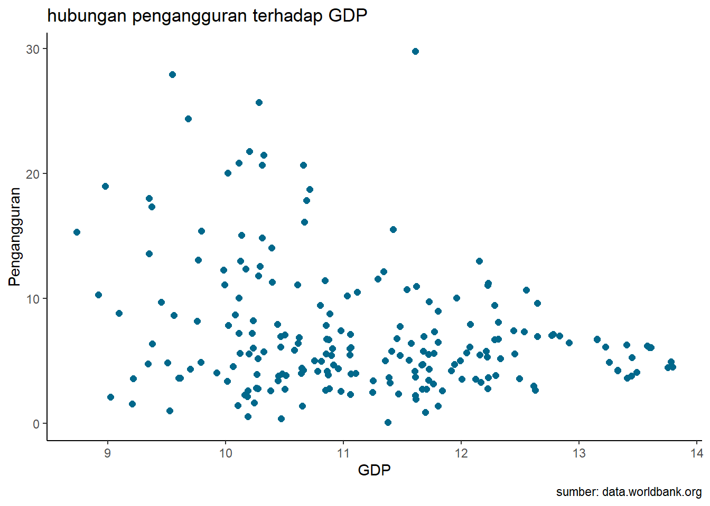

library(tidyverse)
library(readxl)
library(writexl)
library(dplyr)
library(kableExtra)Pengaruh Pengangguran terhadap GDP Tahun 2022
Metode Penelitian Politeknik APP Jakarta

1 Pendahuluan
1.1 Latar belakang
Pengangguran merupakan salah satu masalah sosial ekonomi yang dihadapi oleh banyak negara, termasuk Indonesia. Pengangguran dapat didefinisikan sebagai keadaan di mana seseorang yang mampu dan ingin bekerja tidak mendapatkan pekerjaan yang sesuai dengan kualifikasi dan keinginannya. Pengangguran dapat disebabkan oleh berbagai faktor, seperti ketidakseimbangan antara penawaran dan permintaan tenaga kerja, rendahnya keterampilan dan pendidikan, kemajuan teknologi, dan kondisi perekonomian. Pengangguran juga dapat menimbulkan dampak negatif, seperti menurunnya pendapatan nasional, meningkatnya kemiskinan, kriminalitas, dan konflik sosial.
Salah satu indikator yang digunakan untuk mengukur kinerja perekonomian suatu negara adalah Gross Domestic Product (GDP) atau Produk Domestik Bruto (PDB). GDP adalah nilai total dari barang dan jasa akhir yang dihasilkan oleh suatu negara dalam suatu periode tertentu. GDP dapat mencerminkan tingkat produksi, konsumsi, investasi, dan ekspor-impor suatu negara. GDP juga dapat dipengaruhi oleh faktor-faktor seperti pertumbuhan penduduk, inflasi, kebijakan pemerintah, dan kondisi global.
Menurut hukum Okun, terdapat hubungan negatif antara tingkat pengangguran dan GDP. Artinya, semakin tinggi tingkat pengangguran, semakin rendah pertumbuhan GDP, dan sebaliknya. Hal ini karena pengangguran akan menyebabkan berkurangnya tenaga kerja yang berkontribusi dalam proses produksi, sehingga mengurangi output yang dihasilkan. Selain itu, pengangguran juga akan menurunkan daya beli masyarakat, sehingga mengurangi permintaan terhadap barang dan jasa. Akibatnya, aktivitas ekonomi akan menurun, dan GDP pun akan menurun.
1.2 Ruang lingkup
Dalam penelitian ini peneliti menggunakan objek data yang di ambil melalui word bank berupa jumlah pengangguran dan (Gross Domestic Produk) GDP pada beberapa negara. Terdapat satu variabel independent yaitu pengangguran dan variabel dependen yaitu GDP yang diambil dari objek data yang telah diolah sedemikian rupa yang nantinya akan digunakan sebagai objek penelitian.
1.3 Rumusan masalah
Apakah pengangguran mempengaruhi GDP?
Bagaimana hubungan pengangguran terhadap GDP?
1.4 Tujuan dan manfaat penelitian
Tujuan dari penelitian ini mengetahui hubungan antara tingkat pengangguran dan pertumbuhan ekonomi di Indonesia tahun 2022, menganalisis faktor-faktor yang mempengaruhi tingkat pengangguran dan pertumbuhan ekonomi di Indonesia tahun 2022. Serta memberikan rekomendasi kebijakan yang dapat mengurangi tingkat pengangguran dan meningkatkan pertumbuhan ekonomi di Indonesia tahun 2022.
Manfaat penelitian ini memberikan kontribusi teoritis dan empiris dalam bidang ekonomi makro, khususnya mengenai isu pengangguran dan pertumbuhan ekonomi, memberikan informasi dan masukan bagi pemerintah, akademisi, dan masyarakat mengenai kondisi dan prospek pengangguran dan pertumbuhan ekonomi di Indonesia tahun 2022. Serta memberikan inspirasi dan motivasi bagi peneliti lain yang ingin melakukan penelitian serupa atau berkaitan dengan topik pengangguran dan pertumbuhan ekonomi.
1.5 Package
Packages yang digunakan antara lain sebagai berikut:
2 Studi pustaka
Pengangguran
Pengangguran adalah salah satu fenomena sosial yang disebabkan oleh ketiadaan atau kekurangan lapangan pekerjaan. Pengangguran sendiri merupakan keadaan dimana seseorang dalam usia produktif tidak sedang bekerja atau tidak memiliki pekerjaan. Pada dasarnya fenomena ini disebabkan karena adanya ketimpangan antara jumlah angkatan kerja atau pencari kerja dengan lapangan pekerjaan yang tersedia. Dalam kondisi pengangguran yang tinggi dapat menyebabkan kelesuan ekonomi pada suatu negara.
Dari penyebabnya sendiri pengangguran dibedakan menjadi pengangguran sukarela (voluntary unemployment) dan pengangguran terpaksa (involuntary unemployment). Pengangguran sukarela sendiri bersifat sementara karena orang ingin mencari pekerjaan yang lebih baik atau lebih layak. Sedangkan pengangguran terpaksa terjadi ketika seseorang berada dalam usia produktif terpaksa untuk tidak bekerja padahal dia masih ingin bekerja.
GDP
GDP atau Produk Domestik Bruto adalah nilai barang atau jasa yang dihasilkan oleh suatu negara dalam periode tertentu, biasanya satu tahun. GDP adalah salah satu indikator untuk mengukur kesehatan ekonomi, kemajuan perekonomian, dan kinerja ekonomi suatu negara. GDP juga dapat digunakan untuk membandingkan perekonomian antarnegara atau antardaerah.
Cara menghitung GDP adalah dengan menjumlahkan nilai barang dan jasa akhir yang dihasilkan oleh semua unit perekonomian di suatu negara. Rumusnya adalah:
GDP=C+I+G+(X−M)
Di mana:
• C adalah konsumsi pribadi
• I adalah investasi bisnis
• G adalah pengeluaran pemerintah
• X adalah ekspor
• M adalah impor
3 Metode penelitian
3.1 Data
library(readxl)
library(writexl)
datdwi<-read.delim("clipboard")
datdwi Country.Name pengangguran GDP y
1 Albania 11,808 18916378861 10,276838
2 Algeria 11,55 1,94998E+11 11,29003116
3 Angola 10,209 1,06783E+11 11,02850119
4 Argentina 6,491 6,31133E+11 11,80012115
5 Armenia 12,557 19513474648 10,29033461
6 Australia 3,661 1,69296E+12 12,22864584
7 Austria 4,707 4,70942E+11 11,67296736
8 Azerbaijan 5,462 78721058824 10,89609093
9 Bahamas, The 10,056 12897400000 10,11050217
10 Bahrain 1,399 44383297872 10,64721957
11 Bangladesh 4,699 4,60201E+11 11,66294781
12 Barbados 8,203 5699950000 9,755871046
13 Belarus 4,17 72793457588 10,86209235
14 Belgium 5,631 5,83436E+11 11,76599292
15 Belize 9,687 2830507576 9,451864322
16 Benin 1,654 17396792700 10,24046919
17 Bolivia 4,419 44008282878 10,64353442
18 Bosnia and Herzegovina 14,053 24473906674 10,3887033
19 Botswana 20,684 20355541963 10,30868267
20 Brazil 9,461 1,9201E+12 12,28332289
21 Brunei Darussalam 7,203 16681536467 10,22223605
22 Bulgaria 4,402 90346169915 10,95590975
23 Burkina Faso 5,175 18820064798 10,27462111
24 Burundi 1,02 3338722828 9,523580367
25 Cabo Verde 13,57 2226862134 9,347693331
26 Cambodia 0,361 29504829319 10,46989311
27 Cameroon 4,001 43644068311 10,63992523
28 Canada 5,209 2,13794E+12 12,32999535
29 Central African Republic 6,363 2382618615 9,377054531
30 Chad 1,412 12704149840 10,10394561
31 Chile 7,784 3,01025E+11 11,47860217
32 China 4,886 1,79632E+13 13,25438302
33 Colombia 10,726 3,43622E+11 11,53608111
34 Comoros 8,811 1242519407 9,094303181
35 Congo, Dem. Rep. 4,987 64718641221 10,81102939
36 Congo, Rep. 21,795 15816996655 10,19912402
37 Costa Rica 11,453 69243626029 10,8403798
38 Cote d'Ivoire 2,637 70018715017 10,84521414
39 Croatia 6,746 71600049650 10,85491332
40 Cuba 1,386 6,33442E+11 11,80170706
41 Cyprus 6,976 29250524418 10,46613366
42 Czechia 2,37 2,90528E+11 11,46318732
43 Denmark 4,172 4,00167E+11 11,60224149
44 Djibouti 27,929 3515108860 9,545938779
45 Dominican Republic 7,121 1,13537E+11 11,05513882
46 Ecuador 3,955 1,15049E+11 11,06088464
47 Egypt, Arab Rep. 6,959 4,76748E+11 11,67828863
48 El Salvador 3,822 32488720000 10,5117326
49 Equatorial Guinea 8,689 12029633747 10,08025241
50 Estonia 5,851 38100812959 10,58093424
51 Eswatini 24,389 4790922066 9,680419106
52 Ethiopia 4,018 1,26783E+11 11,10306264
53 Fiji 4,334 4979979546 9,697227559
54 Finland 6,801 2,82896E+11 11,45162719
55 France 7,445 2,77909E+12 12,44390296
56 French Polynesia 13,098 5814661209 9,764524416
57 Gabon 21,469 21071739225 10,32370038
58 Gambia, The 4,78 2187194563 9,339887418
59 Georgia 11,311 24780791064 10,39411517
60 Germany 2,989 4,08247E+12 12,61092295
61 Ghana 3,867 73766052452 10,86785654
62 Greece 12,162 2,17581E+11 11,33762162
63 Guatemala 2,569 95003330316 10,97773883
64 Guinea 5,749 20999229260 10,32220336
65 Guinea-Bissau 3,583 1633559092 9,213134849
66 Guyana 12,358 14718388489 10,16786026
67 Haiti 14,836 20253551885 10,3065012
68 Honduras 7,099 31717699764 10,50130168
69 Hong Kong SAR, China 5,058 3,59839E+11 11,55610773
70 Hungary 3,423 1,77337E+11 11,24880043
71 Iceland 3,809 28064529851 10,44815777
72 India 7,33 3,41665E+12 12,53359996
73 Indonesia 3,554 1,3191E+12 12,12027779
74 Iran, Islamic Rep. 10,964 4,13493E+11 11,61646838
75 Iraq 15,547 2,64182E+11 11,42190351
76 Ireland 4,362 5,3314E+11 11,72684128
77 Israel 3,476 5,25002E+11 11,72016133
78 Italy 8,094 2,04974E+12 12,31169818
79 Jamaica 6,049 17097760724 10,23293924
80 Japan 2,641 4,23217E+12 12,62656351
81 Jordan 17,874 48653381781 10,68711303
82 Kazakhstan 5,008 2,25496E+11 11,35313948
83 Kenya 5,502 1,1342E+11 11,05468967
84 Korea, Rep. 2,788 1,67392E+12 12,22373378
85 Kuwait 2,482 1,75363E+11 11,24393862
86 Kyrgyz Republic 4,567 11543966559 10,06235506
87 Lao PDR 2,633 15468785204 10,18945621
88 Latvia 6,429 40932030050 10,61206328
89 Lesotho 18,039 2236502124 9,349569315
90 Liberia 3,634 4001046970 9,60217365
91 Libya 20,68 45752336036 10,66041327
92 Lithuania 5,569 70974490450 10,85110228
93 Luxembourg 4,698 81641807866 10,91191261
94 Macao SAR, China 2,627 24042287327 10,38097578
95 Madagascar 2,142 15297192799 10,18461174
96 Malawi 5,614 13164667627 10,1194099
97 Malaysia 3,73 4,07027E+11 11,6096237
98 Maldives 4,883 6170638747 9,790330122
99 Mali 2,762 18827176530 10,27478519
100 Malta 2,813 18125564514 10,25829154
101 Mauritania 11,109 9780863579 9,990377202
102 Mauritius 7,234 12948726654 10,11222706
103 Mexico 3,308 1,46585E+12 12,16609074
104 Moldova 2,278 14508333280 10,16161752
105 Mongolia 8,247 17146471626 10,23417477
106 Montenegro 15,402 6229801581 9,794474215
107 Morocco 10,494 1,30913E+11 11,11698131
108 Mozambique 3,906 18406835955 10,26497914
109 Namibia 20,846 12914932656 10,11109215
110 Nepal 11,119 40828247304 10,61096074
111 Netherlands 3,538 1,0094E+12 12,00406275
112 New Caledonia 12,267 9623318718 9,98332487
113 New Zealand 3,253 2,48102E+11 11,39462975
114 Nicaragua 5,565 15671583940 10,19511289
115 Niger 0,534 15342278919 10,18588987
116 Nigeria 5,761 4,72625E+11 11,67451632
117 North Macedonia 15,081 13563132102 10,13235999
118 Norway 3,171 5,79422E+11 11,76299532
119 Oman 2,327 1,14667E+11 11,05943981
120 Pakistan 6,416 3,74697E+11 11,57368064
121 Panama 8,789 76522511800 10,88378922
122 Papua New Guinea 2,753 31603619042 10,49973682
123 Paraguay 6,886 41722295229 10,62036819
124 Peru 3,661 2,42632E+11 11,38494731
125 Philippines 2,238 4,04284E+11 11,6066869
126 Poland 2,602 6,88125E+11 11,83766734
127 Portugal 5,781 2,55197E+11 11,40687499
128 Puerto Rico 5,971 1,13435E+11 11,05474631
129 Qatar 0,095 2,36258E+11 11,37338708
130 Romania 5,436 3,00691E+11 11,47812094
131 Rwanda 13,009 13311487445 10,12422659
132 Samoa 10,313 832945205,6 8,920616433
133 Sao Tome and Principe 15,318 542686976,5 8,734549399
134 Saudi Arabia 5,635 1,10857E+12 12,04476372
135 Senegal 3,434 27684264748 10,44223299
136 Serbia 9,473 63563401044 10,80320713
137 Sierra Leone 3,635 4094563859 9,612207649
138 Singapore 2,758 4,66788E+11 11,66912008
139 Slovak Republic 6,094 1,15462E+11 11,06243799
140 Slovenia 4,18 60063475466 10,77861046
141 Solomon Islands 1,543 1597204341 9,203360482
142 Somalia 20,047 10419541202 10,0178486
143 South Africa 29,806 4,05271E+11 11,60774537
144 Spain 13,009 1,4178E+12 12,15161511
145 Sri Lanka 6,705 74403578363 10,87159382
146 St. Lucia 17,362 2343703704 9,369902706
147 St. Vincent and the Gren. 18,975 948559259,3 8,977064468
148 Sudan 18,73 51662241775 10,71317325
149 Suriname 8,639 3620987993 9,558827085
150 Sweden 7,358 5,91189E+11 11,77172605
151 Switzerland 4,202 8,18427E+11 11,91297971
152 Tajikistan 7,828 10492123388 10,02086339
153 Tanzania 2,762 75732311666 10,87928121
154 Thailand 0,862 4,95423E+11 11,69497647
155 Timor-Leste 4,864 3204753000 9,505794563
156 Togo 4,066 8341225241 9,921229849
157 Trinidad and Tobago 3,982 30053575132 10,47789614
158 Tunisia 16,124 46303552449 10,66561431
159 Turkiye 10,03 9,07118E+11 11,95766399
160 Turkmenistan 5,019 56542857143 10,75237775
161 Uganda 4,28 45567304608 10,65865334
162 United Arab Emirates 2,754 5,07064E+11 11,70506275
163 United Kingdom 3,571 3,08907E+12 12,48982813
164 United States 3,611 2,54397E+13 13,40551199
165 Uruguay 7,841 71177146197 10,85234057
166 Uzbekistan 6,006 80391853887 10,90521204
167 Vanuatu 2,089 1055811724 9,02358648
168 Viet Nam 1,923 4,08802E+11 11,61151341
169 West Bank and Gaza 25,724 19111900000 10,28130386
170 Zambia 6,131 29163782138 10,46484385
171 Zimbabwe 7,945 27366627153 10,43722128
172 Africa Eastern and Southern 7,916835364 1,18514E+12 12,07376881
173 Africa Western and Central 4,7421746 8,75394E+11 11,94220341
174 Arab World 10,6640194 3,54334E+12 12,5494128
175 Caribbean small states 7,432033444 94867024972 10,97711528
176 Central Europe and the Baltics 3,858118137 1,94416E+12 12,28873202
177 Early-demographic dividend 6,744574564 1,41484E+13 13,15070795
178 East Asia & Pacific(EA.P) 4,091677582 3,06882E+13 13,48697192
179 EA.P(excluding high income) 4,224366301 2,11938E+13 13,32620825
180 EA.P (IDA & IBRD countries) 4,242571524 2,11673E+13 13,32566599
181 Euro area 6,723324707 1,41362E+13 13,15033392
182 Europe & Central Asia 6,27004645 2,533E+13 13,40363444
183 European Union 6,098751373 1,67462E+13 13,22391689
184 Fragile and conflictE.S 6,698456614 1,90613E+12 12,28015344
185 (HIPC) 5,024418563 9,80688E+11 11,99153103
186 High income 4,513543599 6,16675E+13 13,79005611
187 IBRD only 6,214674123 3,77524E+13 13,57694418
188 IDA & IBRD total 6,061363407 4,0574E+13 13,60824742
189 IDA blend 6,102046983 1,17509E+12 12,0700718
190 IDA only 5,303064423 1,64774E+12 12,21688984
191 IDA total 5,563703054 2,82282E+12 12,45068346
192 Late-demographic dividend 5,29362427 2,80757E+13 13,44833118
193 Latin America & Caribbean(LAC) 7,02316962 6,82003E+12 12,83378643
194 LAC(excluding high income) 7,045669872 5,84414E+12 12,76672058
195 LAC (IDA & IBRD countries) 7,11762192 6,00157E+12 12,77826484
196 UN classification 5,466356205 1,42711E+12 12,15445712
197 Low & middle income 6,062499698 3,93098E+13 13,59450075
198 Low income 5,520619654 5,28125E+11 11,72273637
199 Lower middle income 6,457085511 8,17152E+12 12,91230293
200 Middle East & North Africa(ME.NA) 9,632055912 4,42662E+12 12,64607245
201 ME.NA (excluding high income) 11,22524917 1,69671E+12 12,2296085
202 ME.NA(IDA & IBRD countries) 11,0627457 1,67761E+12 12,22469095
203 Middle income 6,118014146 3,8781E+13 13,58861878
204 North America 3,789981758 2,75852E+13 13,4406759
205 OECD members 4,930516722 5,97878E+13 13,77661293
206 Other small states 9,759062864 5,30807E+11 11,72493677
207 Pacific island small states 3,388800596 10324332232 10,01386197
208 Post-demographic dividend 4,489386723 5,66617E+13 13,75328946
209 Pre-demographic dividend 5,778952635 1,61725E+12 12,20877599
210 Small states 8,989827893 6,36018E+11 11,8034696
211 South Asia 6,981140624 4,39035E+12 12,6424989
212 South Asia (IDA & IBRD) 6,981140624 4,39035E+12 12,6424989
213 Sub-Saharan Africa(SA) 6,747197151 2,06053E+12 12,31397924
214 SA (excluding high income) 6,747197151 2,05894E+12 12,31364432
215 SA (IDA & IBRD countries) 6,747197151 2,06053E+12 12,31397924Penelitian ini menggunakan data dari beberapa negara di dunia dalam periode tahun 2022. Peneliti mengelola data GDP dengan melakukan log pada data tersebut, dan menghasilkan data y yang nantinya akan dijadikan objek penelitian sebagai variabel dependen.
library(readxl)
datdwi<-read_excel("C:/METOPEL/dwi/datdwi.xlsx")
head(datdwi)# A tibble: 6 × 4
`Country Name` pengangguran GDP y
<chr> <dbl> <dbl> <dbl>
1 Albania 11.8 1.89e10 10.3
2 Algeria 11.6 1.95e11 11.3
3 Angola 10.2 1.07e11 11.0
4 Argentina 6.49 6.31e11 11.8
5 Armenia 12.6 1.95e10 10.3
6 Australia 3.66 1.69e12 12.2library("ggplot2")
library("readxl")
library("dplyr")
ggplot(data=datdwi,aes(x=y,y=pengangguran))+
geom_point(color="#00688B",size=2)+
labs(title="hubungan pengangguran terhadap GDP",
x="GDP",
y="Pengangguran",
caption = "sumber: data.worldbank.org")+
theme_classic()
3.2 Metode analisis
Penelitian ini menggunakan regresi univariat dengan satu variabel independent. Penelitian ini dimaksud untuk mengetahui hubungan antara pengangguran terhadap GDP, dengan spesifikasi sebagai berikut:
\[ y_{t}=\beta_0 + \beta_1 x_t+\mu_t \] di mana \(y_t\) adalah GDP dan \(x_t\) adalah Pengangguran.
4 Pembahasan
4.1 Pembahasan masalah
Hasil regresi:
| Coefficients | Estimate | Pr |
|---|---|---|
| Intercept | 11.58571 | < 2e-16 |
| pengangguran | -0.05681 | 0.000168 |
Dari hasil tersebut, dimasukkan kedalam rumus dan mengasilkan:
\[ y_{t}=\ 11.58571 - \ 0.05681x+\mu_t \]
Koefisien intersep (β0) sebesar 11.58571, yang berarti bahwa nilai y ketika pengangguran = 0 adalah 11.58571. Koefisien gradien (β1) sebesar -0.05681, yang berarti setiap kenaikan satu unit pengangguran akan menurunkan nilai GDP sebesar 0.05681.
Peningkatan pengangguran dapat menyebabkan penurunan GDP. Hal ini dapat terjadi karena pengangguran akan mengurangi jumlah tenaga kerja yang tersedia, akibatnya produksi barang dan jasa akan berkurang dan membuat GDP dapat menurun.
4.2 Analisis masalah
Hasil regresinya adalah
library(readxl)
datdwi<-read_excel("datdwi.xlsx")
reg<-lm(y~pengangguran,data=datdwi)
summary(reg)
Call:
lm(formula = y ~ pengangguran, data = datdwi)
Residuals:
Min 1Q Median 3Q Max
-2.4434 -0.8703 -0.1425 0.7524 2.4710
Coefficients:
Estimate Std. Error t value Pr(>|t|)
(Intercept) 11.58571 0.13195 87.806 < 2e-16 ***
pengangguran -0.05681 0.01483 -3.831 0.000168 ***
---
Signif. codes: 0 '***' 0.001 '**' 0.01 '*' 0.05 '.' 0.1 ' ' 1
Residual standard error: 1.127 on 213 degrees of freedom
Multiple R-squared: 0.06448, Adjusted R-squared: 0.06008
F-statistic: 14.68 on 1 and 213 DF, p-value: 0.0001676Multiple R-squared: 0.06448, yang berarti bahwa hanya 6.448% variasi y yang dapat dijelaskan oleh variabel pengangguran. Sisanya 93.552% variasi y dipengaruhi oleh faktor-faktor lain yang tidak termasuk dalam model regresi ini. Nilai F hitung adalah 14.68 dan nilai p-value adalah 0.0001676. Karena p-value < 0.05, maka ada hubungan antara y dan pengangguran.
5 Kesimpulan
Pengangguran memiliki pengaruh yang negatif terhadap GDP, maka semakin tinggi pengangguran, semakin rendah GDP. Sebaliknya semakin rendah pengangguran, semakin tinggi GDP. Namun disini pengangguran dan GDP memiliki hubungan yang lemah, pengangguran hanya 6.448% dapat menjelaskan variabel GDP, yang artinya masih banyak faktor-faktor lain yang perlu diperhatikan peneliti.
GDP mencerminkan kesejahteraan ekonomi suatu negara, tetapi juga dipengaruhi oleh berbagai faktor. Selain pengangguran, beberapa faktor yang dapat mempengaruhi GDP seperti investasi, konsumsi rumahh tangga, ekspor, kebijakan pemerintahh, teknologi,serta stabilitas politik dan ekonomi.
6 Referensi
Ariefta, R. R., & Woyanti, N. (2014). Analisis Pengaruh Pertumbuhan Penduduk, Inflasi, GDP, dan Upah Terhadap Tingkat Pengangguran di Indonesia Periode 1990-2010 (Doctoral dissertation, Fakultas Ekonomika dan Bisnis).
Indayani, S., & Hartono, B. (2020). Analisis pengangguran dan pertumbuhan ekonomi sebagai akibat pandemi covid-19. Perspektif: Jurnal Ekonomi Dan Manajemen Akademi Bina Sarana Informatika, 18(2), 201-208.
SEPTIATIN, A. A., MAWARDI, M. M., & RIZKI, M. A. K. (2016). Pengaruh Inflasi Dan Tingkat Pengangguran Terhadap Pertumbuhan Ekonomi Di Indonesia. I-Economics: A Research Journal On Islamic Economics, 2(1), 50-65.
Paramita, A. I. D., & Purbadharmaja, I. P. (2015). Pengaruh investasi dan pengangguran terhadap pertumbuhan ekonomi serta kemiskinan di Provinsi Bali. E-Jurnal Ekonomi Pembangunan Universitas Udayana, 4(10), 44574.
Arianto, C. E., Adenan, M., & Dwipayana, I. K. M. (2015). Pengaruh Jumlah Penduduk dan Angka Pengangguran Terhadap Pertumbuhan Ekonomi Kabupaten Jember.